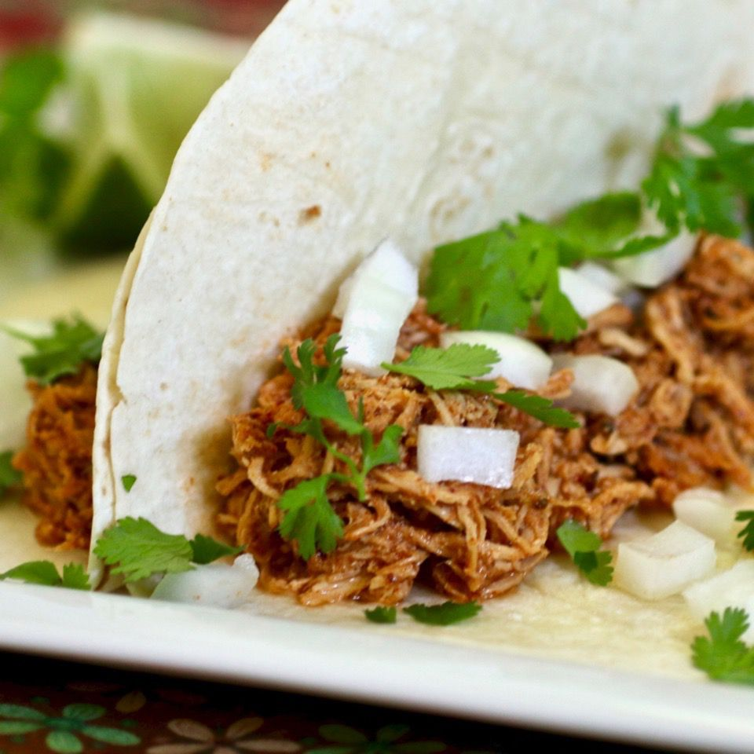

HOME
Spicy Shredded Chicken

Description
This slow cooker shredded chicken can be made with thighs or breasts. It's great in tacos, fajitas, or anything you want to put with it!
Ingredients
- 1 tablespoon olive oil
- 2 tablespoons chili powder
- 2 teaspoons ground paprika
- 1 1/2 teaspoons ground cumin
- 1 teaspoon garlic powder
- 1 teaspoon onion powder
- 1 teaspoon salt
- 1 teaspoon ground black pepper
- 4 (5 ounce) boneless, skinless chicken thighs
- 3 cups chicken stock
- 1 (one) chipotle pepper in adobo sauce, or more to taste
- 1/4 cup tomato paste, or to taste
Steps
- Place olive oil in the bottom of a slow cooker.
- Mix chili powder, paprika, cumin, garlic powder, onion powder, salt, and pepper together in a small bowl.
- Rub chicken thighs with some of the spice rub and place in the slow cooker. Cover with chicken broth.
Add remaining spice mixture and chipotle pepper in adobo and stir until incorporated. Mix in tomato paste.
- Cover and cook until chicken is no longer pink in the centers and juices run clear, on Low, 7 to 8 hours,
or High, 4 to 5 hours. An instant-read thermometer inserted into the center of a thigh should read at least
165 degrees F (74 degrees C).
- When you're ready to serve, take chicken out and shred with forks. Place back in the sauce and toss to coat.
Cook's Note
Feel free to play with the spices depending on your tastes. You can alter it to make it as spicy, or not spicy as you want.
Source